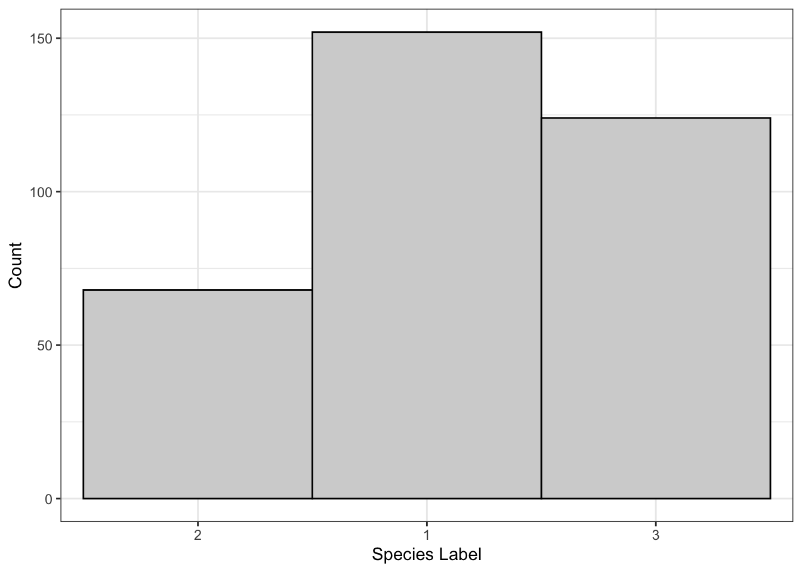
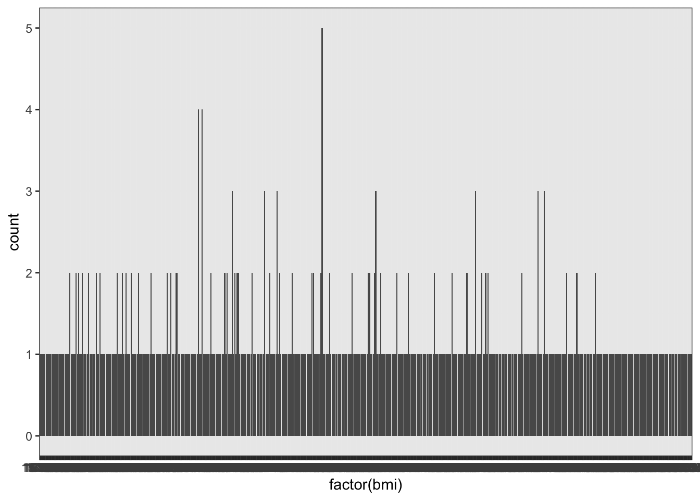
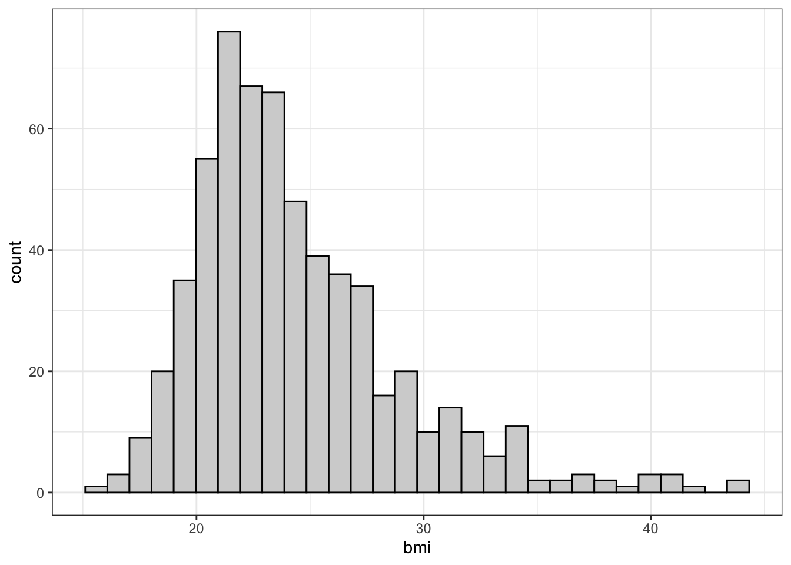

My definition: Statistics is the study of variance (or uncertainty).
The big question: is 1 statistically different from 100?
1 vs. 100 apples? Yes.
1 vs. 100 atoms in an apple? No.
Many people think of “statistics” as something along the lines of “methods for dealing with data”. This completely misses out on theoretical statistics, and makes it seem like statistics is a collection of recipes stating “if you have this data, use this method”. I think a better definition of statistics is that it’s the study of variance, whether that means studying the theoretical properties of variance or trying to “explain” variance1 in a particular data set.
I like to ask the question: “is 1 statistically different from 100”. It may seem like they are obviously different numbers, but we can’t know that without the context. If you’re comparing numbers of apples, then yes, one apple is very different from 100 apples. However, if we’re looking at numbers of atoms per apple, then one and 100 are both imperceptible numbers of atoms and thus we might say the the two apples are basically the same size. The difference in these two examples is the scale, and the variance is a fantastic way to measure the scales of things. In my opinion, the main thing we will learn in this course is how to tell whether two numbers are different given the scale of those two numbers. Another popular definition for statistics is “putting numbers in context”, and by “in context” they mean “relative to their variance”.
In my lecture notes, I use bold font for anything that you will be expected to be able to explain or define. You won’t necessarily see a full definition the first time you see a word in bold, but by the midterm/final it is something I expect you to know. A good way to study in this course is to keep a glossary of all of the words I’ve put in bold, with a definition file/note that you update as we learn more about that concept. And, of course, write a description as if you’re teaching someone else!
Why study variance?
Give context to different numbers.
The size of the difference depends on the context.
We need to know how and why we were wrong.
How: What is the magnitude/direction of the difference?
Why: Are we missing relationships? Bad sampling? Fundamental randomness?
Variance is information!
Variance comes from many sources. We might just be doing something wrong and missing out on important feature of our data, we might be collecting the data in a biased or incorrect way, or there might be some fundamental part of the problem that we will never be able to measure perfectly, and so the variance that we calculated may actually be the smallest possible variance for this problem.
Suppose we’re trying to figure out the heights of undergraduate students. We can calculate the average height, but I don’t expect anyone in the data to actually have this exact height. Exactly how far away from this average do we expect the other heights to be? The measurement of the expected distance to the mean is called the variance.
The variance is a measure of the “usual” distance to the mean - we’ll have a formula for this later.
If our sample consisted of people walking out of the gym, and out of 50 people sampled we had 20 people who were on the basketball team, we might know a little bit more about our variance. Specifically, we’ll get some students who may or may not be representative of the population as well as some students who are unusually tall. These two groups are fundamentally different, so including both in the same sample will increase our variance. Put another way, the different groups in our data explain some of the variance in our data.
Different subgroups within a sample can help explain why the variance is as large as it is.
This is why I say that the variance is information! More specifically, the difference between a single value and the mean of the data is due to some unexplained phenomena, and learning more about the problem will reduce the variance.
Descriptive Versus Inferential Statistics
Descriptive statistics are used to explore the data.
Graphs/figures
Numbers
Inferential statistics relate our data to the population.
Must have a good sample first!
Our sample has a mean. The population has a mean. How different do we expect them to be?
how different
In this course, we will learn about two classes of statistics. Descriptive statistics are the ones that we used to describe the sample that we obtained. This can include things like the mean/median/mode, the variance or the interquartile range, as well as bar charts, histograms box, plots, etc.
Descriptive Statistics describe the data that were acquired.
Inferential statistics are numbers that we calculate because we think they have a relationship to the population. For instance, if we calculate the mean of our data and we trust that our sample is good, then we expect this sample mean to be somewhat close to the population mean. Any time in this course I talk about the difference between two things, I will always mean “with reference to a measure of variance”. In this example, we have a sample mean as well as some measure of its variance, and this variance tells us how similar we expect the sample mean to be to the population mean. If we have a small sample variance, it means that we have a lot of information about the population mean. Variance contains information that we haven’t learned yet!2
Inferential Statistics attempt to describe the population based on the data acquired. This requires a good sample, and it’s why Statistics is such a useful field of study.
In this course, we’re going to start by talking about descriptive statistics and work our way to inferential statistics (with a detour through probability to show why inferential statistics work so well).
1.2 Descriptive Statistics: Plots and Graphs
The Palmer Penguins Data
Let me introduce you to a dataset that I’m going to be returning to throughout the semester. This is called the Palmer penguins data, end it contains information on penguins from several islands in Antarctica. In the slides, I use some fancier code to only show some of the data, but I’ll display the full data set with simpler code below:
These data are really nice for teaching statistics because we can look at what factors contribute to body mass (since it’s easier to measure the length of a beak than it is to weigh a live penguin), or we can try to determine biosex using these measurements (since penguins normally have no external genitalia, but have other morphological differences). We can also fit a model to determine the species of each penguin so that we can get a full picture of what makes each species unique! All of these are examples of statistical analyses that we will cover in this course.
The type of variable is extremely important for choosing the right summary of the data.
Categorical variables consist of two or more mutually exclusive categories, that is, each observation has a label and nothing has more than one label. Categorical variables may be ordered (such as “low”, “medium”, and “high”) or unordered (such as names or student numbers; putting names in alphabetical order is not usually meaningful for summarising the data or doing the analysis).
Categorical variables are categories. Be careful - some categories are encoded as numbers, such as “group 1” and “group 2”, etc.
This distinction of “ordered” versus “unordered” matters to determine what visualization or model you might want to use to compare data within categories. For instance, we might want to see the change in response to a “low” treatment compared to a “medium” or “high” treatment, where we fully expect the response to the treatment to be lower for “low” treatment and higher for “high”. In contrast, suppose we knew the patients’ occupations. We have no expectation that the treatment reponse in the “electrician” group is lower or higher than any other group, because there’s no logical ordering to occupation.5
Ordered and unordered categorical variables.
Binary variables are a special case of categorical variables, which only have two categories. In this case, the ordering is rarely important, and thus we don’t really make the distinction between ordered binary and unordered binary. It’s a single difference either way, so we can just look at the differences within the categories.6
Binary variables.
Quantitative variables are those that are measured with numbers. Unlike “low” to “medium” versus “medium” to “high”, we know how big a step it is from 0 to 1 and then 1 to 2. Unlike categorical variables, quantitative variables have a concept of “in-between”; we have nothing between “medium” and “high”, but there are infinite numbers between 1 and 2.
Quantitative variables are numbers.
There are, however, cases where there aren’t possible measurements between 1 and 2. These are called “discrete”7 For instance, the number of children that some has is either 0, 1, 2, etc. Discrete variables are somewhere in between categorical and continuous variables (variables that can take be number). Consider the following two examples of discrete variables: the number of children that someone has, and the number of cents in their bank account. In a study, we might want to look at everyone who has no children, everyone who has 1 child, everyone who has 2, etc. However, we would not want to compare everyon who has 0 cents in their bank account, everyone who has 1 cent in their account, 2 cents, 3, cents, etc. In terms of modelling and visualization, we will sometimes treat discrete variables as categorical and sometimes as continuous.8
Discrete variables only allow for some numbers, such as the numbers of children per family.Continuous variables can take any value in a range. For any two possible numbers, there’s another possible number in between them. Alternatively, they can be defined as “any measurement you make could have been more precise.”
The distinction between categorical and quantitative isn’t always this obvious, but can be very helpful for choosing the right kind of plot or numerical summary.
Grey Areas
Student Numbers
A student number looks like a quantitative variable, but it’s actually just a name (category)!
There are a couple gray areas when talking about variable types. The distinction between categorical and quantitative isn’t always perfectly clear. For example, student numbers are names, but they are completely made up of numbers. However, you wouldn’t treat these numbers as if one student number comes after another in the same way that you wouldn’t put students in an order based on their names. You technically can do this if you do it alphabetically or order the student numbers in order, but this isn’t a meaningful ordering. It’s not like one student number is larger than another student number, and taking the meaning of student numbers wouldn’t make any sense.
Individuals (Subjects)
An individual is the thing we are making measurements on. For example, in the Palmer Penguins data set, a penguin is an individual and we measure their flipper length, bill length, the island they were observed on, etc. In other data sets, we may measure the GDP of countries (countries are the individuals) or the cuteness of dogs.
Individual: the unit of study. We make measurements on individuals.
Challenge: What are the individuals?
The following data are from the “Titanic” dataset.
Each number defines the count of children who survived the Titanic’s sinking.
Male
Female
1st class
5
1
2nd class
11
13
3rd class
13
14
Crew
0
0
There are a couple of ways to interpret this.
People: We measured whether an individual survived (one measurement per person).
Class: We have two measurements per class - one for male children, one for female children.
Sex: We have four observations (class 1, 2, 3, or crew).
Finally, we could say we have one observation per class/sex combination.
There isn’t one “correct” definition of individual here. However, the way we define individual affects how we might visualize these data!
CO\(_2\) Measurements
If we measure the C0\(_2\) at a given location each month, then do the months count as the individuals? This describes time series data, which we won’t cover in this course. However, visualizations of data that are measured over time can reveal a lot of information!9
Paired Observations
Spousal pairs - the pairs are the individuals?
Before/after (e.g., weight loss) - people are individuals.
This is the same idea as spousal pairs!
All of the variables we just talked about are measured on individuals. That is to say, an individual is what you are measuring when collecting data. This can take the form of a single penguin, in which case it’s obvious that this body mass belongs to this penguin; we have measured this body mass on this.
There are some gray areas to this as well, though. For example, if we’re measuring carbon dioxide every month, then we’re actually measuring carbon dioxide as the variable and months as the individuals, and we can measure other things on those individuals if needed.
We will also encounter paired observations in this course, which are measurements on two things at once. For example, we might be looking at spousal pairs, perhaps measuring the difference in height per pair. The variable we are measuring is the difference, and so we only have one observation per individual, which means that the individuals must be the pairs of people. A slightly more obvious example is something like a weight loss study were observing a change in weight for a certain person, even though we have two observations the individual is still the person who we’re measuring.
Paired Observations: a special type of data where the difference (subtraction) of two values is what we are studying.
Example: What are the Individuals? What are Variables?
am: Binary (categorical); whether the car is automatic or manual.
cyl: It’s the number of cylinders, so it can be considered a number. However, there are only three possible values: 4, 6, or 8. We could consider these numbers, but it is likely more useful to think of 4 cylinder cars in one category, 6 cylinder in another category, and 8 cylinder in the last category. This way, when we do analysis, we are just comparing categories rather than see what happens when we add cylinders (“adding cylinders” makes it sound like we might add 1 cylinder to a 4 cylinder car, or like we might make predictions about what would happen with a 2 cylinder car).
1.3 Graphs/Charts/Plots
Pie Charts
The wedges must sum to 1.
If “Adelie” makes up 44% of the data, it should be 44% of the pie chart.
All penguins are either Adelie, Gentoo, or Chinstrap; no penguins have more than one species.
Mainly good for emphasizing one wedge
Emphasizing can easily mean misrepresenting, whether accidentally or on purpose!
In this course, I will not be providing you the code required to make a pie chart. However, you should understand what a pie chart is, what data it works for (categories), and how they relate to bar charts.
Bar Charts: Categories
Bar charts are similar to pie charts, but better in practically every way.
Each bar represents a category, and the height represents the number of observations in that category.
The code required to create the bar chart can be shown by clicking the “>Code” icon. An explanation of the code is below (but this will not be tested).
Code Explanation
The data set is built into our so we don’t need to load anything to put this data. We do need to load in the ggplot library, though. In my lecture notes, you’ll see lots of code that looks like this, but you will not be tested on your ability to re-create this code. For those interested, here’s a quick breakdown of the functions I used:
The ggplot() function tells R what data we will be using.
The aes() function sets up the plot “aesthetics”, such as what variable goes on the x-axis, what variable goes on the y-axis, what variable is assigned to a colour, what variable determines the shapes of points, etc.
geom_bar() actually draws the bar plot using the data set that ggplot() set up and the aesthetics, that aes() set up.
Try running the code without this line and see what happens!10
The labs() function simply adds labels to the plot to make it look nicer.
Compare this to the following table:
table(mtcars$am)
0 1
19 13
Bar charts are primarily used to compare categories. The most common use of a bar chart is to count the number of observations in each category, and create a bar with a corresponding height. In this example, we see, automatic and manual transmissions, with automatic labelled as zero and manual labelled as one. We can see that approximately 19 cars are automatic and 13 cars are manual. Unlike a pie chart, we can read these numbers off of the plot and it’s easy to compare these two categories.
Titanic Example
The following example demonstrates why it’s important to be clear about what an “individual” is. Depending on how we define an individual, we might choose to make a different plot!
If we’re measuring things about different Sexes (“sexes” are “individuals”), we’re doing a different study than if we consider ourselves to be making measurements about different Classes.
Based on this plot, we might be asking how “Sex” varies by “Class”.
Based on this plot, we might be asking how “Class” varies by “Sex”.
Exercises
The following exercises are based on the exercises in the (optional) OpenIntro biostats textbook. They are based on the Functional polymorphisms Associated with human Muscle Size and Strength, or famuss, data set.11
The data are available in the oibiostat pacjage in R, which is a package based on the OpenIntro Biostat textbook. Don’t worry if you don’t know what any of that means - it’s not important for this portion of the course.
The columns are a little difficult to understand, so here’s a brief overview.
variable
description
sex
Biological sex of the patient
age
Age (years)
race
Self-reported race
height
Subject’s height in inches
weight
Subject’s weight in pounds
bmi
Subject’s body mass index (weight divided by height\(^2\))
actn3.r577x
I think it’s obvious what this column is
drm.ch
Again, this is obvious.
ndrm.ch
No need to explain this one.
Okay, so some of the columns need some explaining. The study was interested in whether a particular genotype affected the ability of subjects to build muscle. The genotype is at the genome position r557x in the ACTN3 gene, which is a fancy way of saying that the actn3.r577x tells us something about the subject’s genetic code. The genotype can be either TT, TC, CT, or CC, and the researchers believed that these genes determine how easily people build muscle.
The way the study was carried out is as follows. The researchers asked each subject to perform a test of strength using each arm. Subjects were then asked to follow a muscle strengthening exercise, but only on their non-dominant side (if they’re right handed, they were asked to strengthen their left arm). After the strengthening, they repeated the test of strength. The columns labelled drm.ch and ndrm.ch are the percentage change in their strength for their dominant arm and their non-dominant arm (the dominant arm was measured to see whether the patients gained or lost strength for reasons other than the prescribed strength training exercise).
Based on the R output, what type of variable is each column?
What counts as an individual in this study?
Each person
Each pair of people
Each arm (two per person in the study)
Each column in the data
Explain why either a bar chart or a pie chart would be appropriate for the actn3.r577x column. Be extremely precise.
Ordered and Unordered
Whether the categorical variable is ordered or unordered affects the way we make the plot:
Ordered: put the bars in order
For example, if we have data from 2020, 2021, and 2022, then we would have the bars in that order!
Unordered: put it in an arbitrary order
Alternative: order according to largest to smallest.
library(forcats) # For rearranging "factors", aka. categorical variablesggplot(penguins) +aes(x =fct_infreq(species)) +geom_bar() +labs(x ="Species", y ="Count",title ="Unordered Categories, Ordered by Count")
The bar chart is the de-facto standard for categorical variables, whether binary or otherwise. For quantitative, variables, we need other options.
Quantitative Variables
Recall the distinction between discrete and continuous:
Discrete (whole numbers)
Ex. Number of students in a classroom.
Continuous (could be measured with more precision)
Ex. height
Grey Area
What type of variable is “dose level”, defined as either no dose, half dose, or full dose? They aren’t whole numbers, but we can’t measure them with greater precision!
Quantitative variables are split into discrete and continuous variables. Discrete variables are generally represented by whole numbers, for example, the number of students in a given classroom.
In contrast, continuous numbers could be anything! I like to think of them as numbers that could’ve been measured with more precision if we had better tools. For example, peoples Heights could be measured to infinite precision if we had perfect tools, whereas we don’t need better tools to measure the number of children in a family more precisely.
Of course, as with all things, there is a gray area here. Many studies will choose to give their subjects either no dose, a half dose or a full dose. These are obviously numbers and it is very likely that the response for a 0.75 dose is somewhere in between the half dose and the full dose. However, we chose these numbers and thus there are only three possible numbers. No amount of measuring is going to give us something other than a half dose (any deviation in administration of the dose can hopefully be ignored for the purpose of the study). In the definitions we’ve used it is neither a whole number, nor cannot be measured with higher precision. For the purposes of visualization, we might actually want to use a bar chart as if this were a categorical variable. If the dose had more categories and we expected the response to have a smooth trend across different dose levels, then we might use visualizations meant for discrete data. If the dose could have been any number between zero and one then we might use visualization meant for continuous data.
Even though we only know the data to one decimal point, we could have measured more precisely!
This is a continuous variable.
Note that there are ties in these data, and thus we could make bar charts with bars that are more than one unit tall. However, if we measured more precisely, these ties would go away.
Can’t just draw a bar chart with all sharks that were 9.4, all that were 12.1, …
How many we display this collection of shark lengths? It is clear that there are many different values that we could’ve gotten for the length and so we might not want to use something like a bar chart. Let’s try it anyway.
This plot demonstrates why bar chart isn’t appropriate for these data. We can see that each data point essentially gets its own bar, and so the heights are no longer meaningful. The exception is that these data are rounded to one decimal place, and so some lengths end up in the same bar. Knowing that some of our data are rounded to the same value is not necessarily meaningful for any analyses that we might want to do. Instead, we would like a chart that shows us where most of the data are, and whether or not they are clear patterns in these data.
Histograms: Put observations into bins
The steps in building a histogram:
Choose the bins.
e.g. (0,10], (10,20], (20, 30], etc.
The notation (a, b] means that “a” is not included in the interval, but “b” is. We have no sharks that have a length of 0, but a shark with a recorded length of exactly 10 would be in the first bin, labelled (0, 10], not the second bin that is labelled (10, 20].
Count the number of obs. in each bin.
Draw a bar chart as if the bins are categories.
Bars should touch since there’s nothing in between.
Code
## Note that I've manually chosen the bin widths and centers.ggplot() +aes(x = sharks) +geom_histogram(binwidth=2, center =0, # Only need to specify the center of one bincolour ="black", fill ="lightgrey") +labs(x ="Shark Length", y ="Count")
In this histogram, the bins are (-1, 1], (1,3], (3,5]…
Notice how the y-axis is still “Counts” (like a bar chart).
Most of the time we will probably want to use a histogram to display quantitative, continuous data. A histogram is very much like putting continuous numbers into discrete bins, and then showing it as a bar chart. In this example, I chose bins from 1 to 3, then 3 to 5, then 5 to 7, and so on. For the bar on this histogram centred at a shark length of 12 we can see that there were five observations between 11 and 13. Note that the definitions of bins has a round bracket on the left side and the square bracket on the right side, this is to say that the left end point is not included but the right end point is included. This is just to account for cases where X may fall directly on the border between two bins, and we have to choose which bin. The actual bin we choose is arbitrary, kind of like driving in the left or the right. You will not be tested on whether you can remember which endpoint is inclusive.
From the plot, we can see that most of the sharks are around 16 feet in length with sun going down to 10 feet and some as long as around 22 feet. The plot has a nice bell shape.
Histograms: Bin Width Matters!
These histograms are showing the same data!
Code
ggplot() +aes(x = sharks) +geom_histogram(binwidth=2, center =0, # Only need to specify the center of one bincolour ="black", fill ="lightgrey") +labs(x ="Shark Length", y ="Count")
Code
ggplot() +aes(x = sharks) +geom_histogram(binwidth=1.5, center =0.75, # Only need to specify the center of one bincolour ="black", fill ="lightgrey") +labs(x ="Shark Length", y ="Count")
In the previous graph, it looked like the distribution of sharks followed a nice bell-shaped curve. However, if we use bins that are 1.5 units wide we get a plot that looks fairly different. It still looks like most sharks are around 16 feet and some go down to 10 and some go as high is 22 or 23, But we see a large bar that covers 12 to 13.5.
With histograms the bins that you choose are extremely important. Most software have default values that are generally reasonable, But it’s always always always worth investigating other bins.
A simple version of the plot can be made as follows, where ggplot chooses the bins automatically. Note that this is rarely desireable, and you should almost always choose the bins yourself.
ggplot() +aes(x = sharks) +geom_histogram()
Below is an app to visualize the difference that the binwidth can make!
When you’re asked to comment on a histogram, always mention the following:
Shape: Unimodal/bimodal and skewness
Skewness: put a glob of peanut butter on toast, “skew” it to one side.
Center: midpoint (mean/median)
Mode depends on the bin!
Skewness shows up in the relation between mean and median: “Mean less (than median) means left (skew).”
Spread: the range/variance/IQR
More on IQR later!
Outliers: points that don’t fit the shape
More on outliers when we cover IQR!
There are many shapes that a histogram can show. A distribution can be skewed (or “heavy-tailed”), which means that it looks like a bell curve but one side has a longer/thicker tail. We also want to know about several measures of the center of the distribution, as well as how spread out it is. Outliers are also something interesting to note; outliers are something that are not part of the shape (so you wouldn’t consider them when evaluating the skewness of a distribution).
Try drawing out each of these shapes/patterns!
Example: What is the Shape?
This represents a bimodal distribution because it has two peaks (the word “mode” can refer to the category with the most observations, but it can also refer to the top of a peak). This would be described as a bimodal distribution with centres around 190 and 215, ranges around 195 to 205 and 205 to 235, with both peaks being symmetric and without any outliers.
Example: What is the Shape?

This is the classic sort of gotcha question that I like to use. This is actually a bar chart that I modified so that the bars have no space in-between - the x-labels are categories, not ranges! It may look somewhat symmetric and unimodal without any outliers, but the x-labels are out of order. These numbers are just numerical encodings of species names - 1 refers to Adelie penguins, 2 refers to Chinstrap, and 3 refers to Gentoo. These numbers were applied alphabetically because there isn’t really a logical way to order these species: they’re unordered categories!
So, basically, it does not make sense to talk about shape in a bar graph where the labels could have been put in any order!
This visualization technique is shown purely for pedagogical reasons. A stem and leaf plot is like a histogram where the bins are all powers of 10. It is displayed using the stem which is the first digit, and the leaf which is the second digit. For example, the number 78 has a 7 in the tens place (the tens place is the stem) and an 8 in the ones place (and we’re using the ones place as the leaf). In the stem and leaf plot, 78 goes on the stem labelled 70 and it gets a leaf of eight. Going the other way, we can see a stem labelled 90 and a leaf labelled eight which corresponds to the number 98. For the stem labelled zero we have the numbers one and four, for the stem label 10 we have the numbers 12, 12, 12, and 15.
Essentially, this is just a histogram. Instead of drawing a bar that corresponds to the number of observations in that bin, we are just listing the observations in that bin. Compare the stem and leaf plot to the sideways histogram on the right: in the first bin from 0 to 10 (not including 10) there are two numbers, one and four, and the length of the bin is two. For the stem label 20, we have the numbers 21, 23, 25 and 26, and this is displayed as a bar with length four in the histogram.
The main reason for showing this visualization technique is that it can be very useful for tests and quizzes, because it allows you to create a histogram without software. It also allows easy computation of the median since all of the leaves are in order. These are not used in practice because in practice you will have software to create histograms and find the median!12
Note that the shape of the distribution can be seen from the stem and leaf plot. It is a unimodal distribution that is right skewed and likely does not have any clear outliers (there is one point that appears to be separate from the others, but this might be due to bin choice).
Summary
Individuals are what we make measurements on
Can be pairs, dates, or people
Variables are what we measure
Can be derived from other measurements
You will not be asked to do anything with pie charts in this course.
Bar charts show counts of categories.
Can optionally sum to 1 (like a pie chart).
Histograms are like bar charts for binned data.
Bins matter.
Must interpret shape.
1.4 Exercises
Which of the following plots would be appropriate for the bmi column?
Bar chart
What do you think? Does the plot below give you any useful information about the data?

Pie Chart
No. I’m not even going to try in this case.
Histogram
Correct! The plot below tells us where most of the subjects’ BMI lie. We can see that most of the subjects are between 15 and 30, with a few between 30 and 35 and few above 35.
This is the whole reason we categorize variables as quantitative or categorical: knowing the type of the variable tells us which plots will give us useful information!

Prescriptions of opioid pain relievers. Opioid pain relievers are prescribed at a higher rate in the United States than in any other nation, even though abuse of these medications can result in addiction and fatal overdoses. The CDC examined opioid pain reliever prescriptions in each state to find out how variable prescription rates are across the nation. Here are the 2012 state prescription rates, in number of prescriptions per 100 people, listed in increasing order:
Make a histogram of the state opioid pain reliever prescription rates using classes of width 10 starting at 50.0 prescriptions per 100 people. e.g. (50, 60]. Do this by hand first, then using R.
Would you say that the distribution is single-peaked or multiple-peaked? Is it roughly symmetric or skewed?
The Statistical Abstract of the United States, prepared by the Census Bureau, provides the number of single-organ transplants for the year 2010, by organ. The following two exercises are based on this table:
Disease
Count
Heart
2,333
Lung
1,770
Liver
6,291
Kidney
16,898
Pancreas
350
Intestine
151
The data on single-organ transplants can be displayed in
a pie chart but not a bar graph.
a bar graph but not a pie chart.
either a pie chart or a bar graph.
Kidney transplants represented what percent of single- organ transplants in 2010?
Nearly 61%.
One-sixth (nearly 17%).
This percent cannot be calculated from the information provided in the table.
See also: OpenIntro Textbook problems relating to visualizations that we have learned, especially 1.30, 1.36, 1.37, 1.39, 1.40, 1.47.
We’ll talk about what “explaining variance” means, along with exact ways to calculate it, in a later lecture.↩︎
It is worth noting that there is also variance that isn’t information, and there’s information that we’ll never have access to. Variance is an opportunity to learn, but there’s almost always a limit to how much we can learn.↩︎
A note on gender/sexuality/biology: penguins, especially Chinstrap and Gentoo penguins, don’t have particularly strong gender roles, and often form same-sex couples. In this course, I will use the term “sex” to mean “biosex”, rather than “gender”, to indicate that we’re looking at morphological differences due to XX and XY chromosomes.↩︎
Possibly categorical if there are any penguins with chromosomal abnormalities.↩︎
We may, however, know that factory workers have more exposure to a pathogen than those who work from home, but we would likely want to measure this directly rather than measuring it by proxy with occupation.↩︎
We often encode on of the categories as 0 and the other as 1, but this is usually either clear (0 = no treatment, 1 = treatment) or completely arbitrary (0 = femala, 1 = male) and this arbitrariness is acknowledged. Neither of these cases affect the way we make plots or run analyses that are based on binary variables.↩︎
There are methods/visualizations that are specific to discrete variables, but they only apply in very specific circumstances and will not be taught in this course.↩︎
Of course, by “information”, I mean variance. If we don’t know the date that an observation was observed, we just have a collection of different numbers. If we see that there’s a pattern over time, we know a little more about why each number is different from the others!↩︎
It will still create a plot with the correct x and y axes, but won’t draw the bars.↩︎
The “FAMUSS” acronym is a bit of a stretch, but just go with it.↩︎